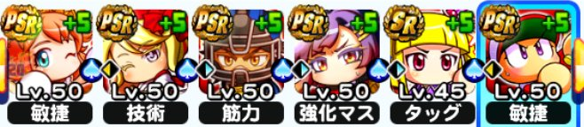
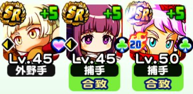

ガイド
デッキページの見方
各項目の意味を、実際のデッキ画像と一緒に説明します（例はアンドロメダ学園・捕手のデッキです）。
ページ全体
- 高校名：現在高ランク育成が行いやすい2校を載せています。
- 絞り込み・検索機能：メインポジション（投手シナリオ：先中抑、野手シナリオ：捕一二三遊外）のチェックと、キャラ名の検索（ひらがなOK、スペースで複数指定）が可能です。
デッキ一覧
- 育成結果：実際に育成した選手ランクとポジション、総経験点を載せています。サクセスは運要素が絡むので毎回同じ結果になるとは限りません。

- デッキ画像：実際に使ったメインデッキ編成です。デッキをタップすると詳細を確認できます。
デッキの詳細

- デッキ画像②：実際に使ったサポートデッキ編成です。
- 練習改革：入っているものは○、入っていないものは×で表記しています。
- 獲得経験点上限：サポートデッキ内での最大値を表記しています。
- メインデッキ：イベキャラの名前と、シナリオ毎に特に重要となるボーナスをイベキャラ毎に載せています（覚醒の最大値と固有ボーナスの分を含む）。
- ☆マーク：至高系の金特を獲得したキャラに付けています。
- 追加アイテム：メインデッキにセットしたイベキャラ効果により追加で持ち込めるアイテムの一覧です。
- サポートデッキ：イベキャラの名前と、Lv、ポジション、一致判定（一致／不一致／回復）を表記しています。
- 育成のポイント：育成で意識すべきポイント一口メモです。
- 解説動画：実際のサクセスの様子をYouTubeにアップしている場合、ここに動画が貼られます。